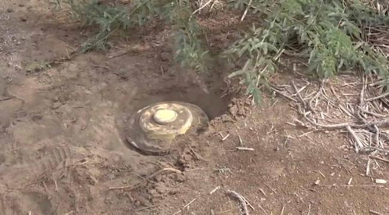
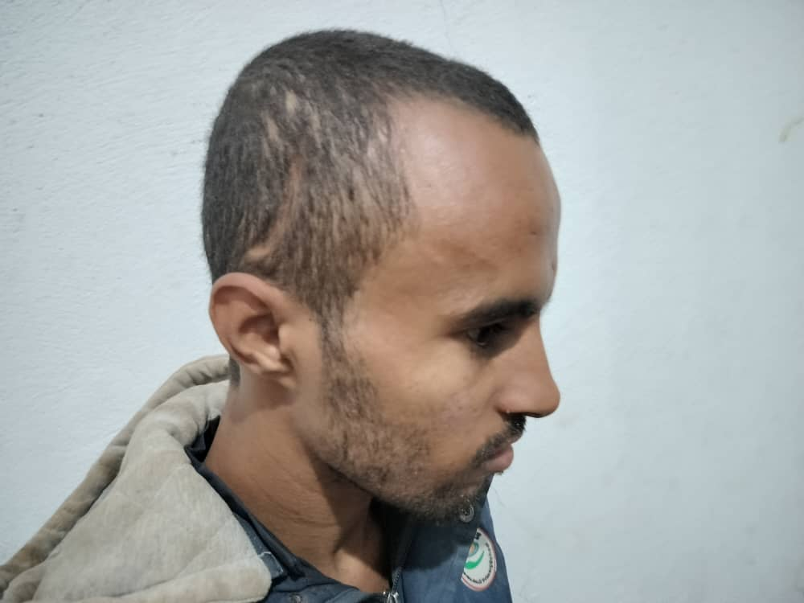

"السُكمان" بن كفاح.. كافح الظروف وغلبته الحرب
حين توفي والده قبل عشر سنوات، وجد الطفل محمد الملقب بـ "السُكمان" نفسه أمام مهمة هي أكبر من عمره الذي لم يتعدَ حينها 12 عاما، حمل محمد مهمة إعالة أفراد أسرته، وظل لسنوات يتكبد أعباء الحياة القاسية، في سبيل توفير عيش كريم لعائلته، بعد فترة استهواه شياطين الحرب، فحرفوا مسار حياته، لتتفاجأ والدته ذات يوم بخبر كان الأكثر إيلاما في حياة الأسرة، تحولت حياة السمكان وعائلته إلى جحيم لا يطاق.
في مدينة تعز، حيث تختلط رائحة البارود بأنفاس الناس، كبر محمد كأي طفل آخر، يحلم بيوم دراسي مشمس وأمسيات مليئة بالضحك، لكن حادث السير المأساوي الذي أودى بحياة والده في 2015، قلب موازين حياته، ترك محمد مقاعد الدراسة في الصف السابع ليحمل عبء عائلته المكونة من خمسة أفراد على كتفيه الصغيرين، تتحدث والدته كفاح، البالغة من العمر 47 عامًا، بحزن يقطر من كلماتها: "منذ وفاة زوجي، أصبح محمد الأب والأخ والمعيل لنا، حمل الأثقال عنّا جميعًا، ولم يدع الفقر يقهرنا."
مرت الأعوام ثقيلة، وبدأت عزيمة محمد تتهاوى، انحرف مع رفقاء السوء، وغابت عنه مسؤولياته، وفي نهاية عام 2018، عاد إلى المنزل فجأة وهو يرتدي زيًا عسكريًا ويحمل سلاحًا آليًا، لتصرخ والدته برعب في وجهه "ما هذا الذي فوقك؟" لم يجبها، كان كمن غادر العالم، مثله مثل عشرات الشباب في حيهم الشعبي الذين صار السلاح لغتهم وسقطوا في مستنقع الحرب.
بعد أسبوع، اختفى محمد، بحثت عنه كفاح في كل زاوية وحارة دون جدوى، إلى أن جاءها جارهم "أبو غازي" ليخبرها بأنه رآه في السوق، متجهًا إلى إحدى جبهات القتال، حينها جف حلقها من الخوف، لكن لم يكن أمامها سوى الانتظار الموجع.
ذهبت يوما ما إلى "أبو هاني"، عاقل الحي، تطلب مساعدته، لكنه هو الآخر التحق بالجبهة، بدت الحرب وكأنها تبتلع الجميع بلا رحمة، وبعد أسبوع عاد "أبو هاني" يحمل الخيبة قال لكفاح "ابنك ذهب إلى الحدود مع مجموعة أخرى."، سقطت كلمات الرجل على رأس كفاح كالصاعقة.
بعد أن مرت شهور، والانتظار ينهش أيامها، عاد حسين، أحد أصدقاء محمد، حاملا بارقة أمل لكفاح، أخبرها أن محمد لا يزال حيًا في موقع آخر، حصلت كفاح على رقم هاتف أحد رفاقه، وحاولت الاتصال به مرارًا، لكن الخطوط كلها كانت مغلقة، وكأن ابنها غاب إلى الأبد.
في صباح 12 يناير 2020، تغير كل شيء، فبينما كان محمد ورفاقه في دورية ميدانية، انفجر بهم لغم أرضي، مات صديقه في الحي علي في الحال، وأصيب محمد إصابة خطيرة في رأسه.
استفاق محمد في المستشفى وهو عاجز عن تمييز العالم من حوله، يقول بكلمات متعثرة: "صحيت.. مش عارف وين أنا." وسرعان ما عاد إلى الغيبوبة، محاصرًا بين الوعي والعدم.

أثر الإصابة في رأس السكمان
يفتقد محمد قدرته على التركيز والكلام مع مرور الأيام، ووالدته كفاح تراقب انحداره نحو هاوية لا قاع لها، ودموعها تسيل كلما نظرت إلى عينيه الفارغتين، حاولت بشتى الطرق أن توفر له العلاج، لكن الفقر كان سلاحًا آخر يصيبها كل يوم، طرقت أبواب المستشفيات والجمعيات، واستغاثت بالجهة التي كان يقاتل معها، لكنها لم تتلق سوى الوعود الفارغة.
حينها قررت كفاح أن تعيده إلى البيت، إلى حضن أمه الذي لم يغادره أبدًا رغم كل شيء، كان المنزل البسيط في حيهم المهدم شاهدًا على مأساتهم اليومية.
يجلس محمد في فناء المنزل، يحدق بالسماء، تائها كطير فقد أجنحته، تحكي كفاح لجيرانها بأسى: "محمد فقد عقله، مثلما فقدنا نحن أحلامنا." وعلى الرغم من ذلك، لم تفقد إيمانها بأن الفرج قد يأتي من حيث لا تدري.
بين حين وأخر تطوف على الجمعيات والمستشفيات، تبحث عن بصيص أمل، وفي كل مرة تُقابل بالأبواب المغلقة، وتعود إلى محمد بعينين دامعتين وقلب منكسر.
قصة محمد "السُكمان" ليست إلا واحدة من آلاف القصص التي ولدت من رحم الحرب، حرب لم تكتفِ بسلب الأرواح، بل اختطفت العقول ومزقت الأحلام.
تجلس كفاح اليوم بجانب ابنها، تحتضنه بنظراتها، تحلم بعودة زمنٍ كانت فيه الحياة أبسط وأجمل، تمر الأيام ثقيلة كأن الزمن قد توقف، لكن قلب كفاح لا يزال ينبض بالأمل... عله في يومٍ ما يعود محمد كما كان، أو يعود السلام إلى أرضٍ ملت الحرب.